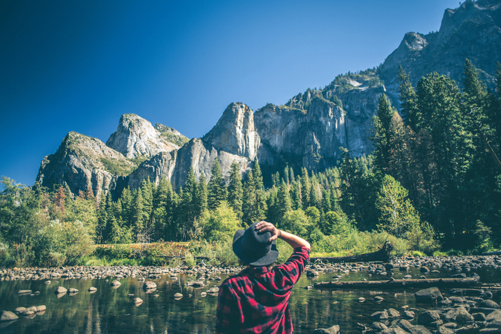

Fjelltur
Ole er på fjelltur alene. Han sitter på en klippe 600m over havet

Natur
Norge er kjent for sin natur og dette er et flott eksempel på hvorfor

foss
Vann er viktig for kroppen og helsen

Nordlys
Vi finner mye nordlys i Nord-Norge
Fjell
Han ser opp mot fjellene

Snø
på mange fjelltopper er det ofte glatt og mye snø

Utsikt
dette er flott tur for deg som ønsker fin utsikt og trening

gåtur
fjellturer er en fin måte å komme seg ut og dra nytte av naturen